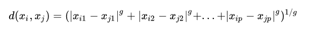
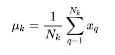
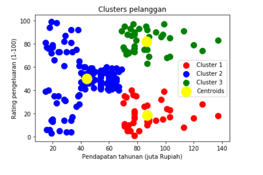

Algoritma K-Means Clustering¶
Pengertian K-Means Clustering¶
K-Means Clustering adalah suatu metode penganalisaan data atau metode data mining yang melakukan proses pemodelan tanpa supervisi(unsupersid) dan merupakan salah satu metode yang melakukan pengelompokkan data dengan sistem partisi.
Algoritma K-Means¶
Algoritma untuk melakukan K-Means clustering adalah sebagai berikut:
- Pilih K buah titik centroid secara acak
- Kelompokkan data sehingga terbentuk K buah cluster dengan titik centroid dari setiap cluster merupakan titik centroid yang telah dipilih sebelumnya
- Perbaharui nilai titik centroid
- Ulangi langkah 2 dan 3 sampai nilai dari titik centroid tidak lagi berubah
Proses pengelompokkan data ke dalam suatu cluster dapat dilakukan dengan cara menghitung jarak terdekat dari suatu data ke sebuah titik centroid. Perhitungan jarak Minkowski dapat digunakan untuk menghitung jarak antar 2 buah data. Rumus untuk menghitung jarak tersebut adalah

Dimana:
g = 1, untuk menghitung jarak Manhattan
g = 2, untuk menghitung jarak Euclidean
g = ∞, untuk menghitung jarak Chebychev
xi , xj adalah dua buah data yang akan dihitung jaraknya
p = dimensi dari sebuah data
Pembaharuan suatu titik centroid dapat dilakukan dengan rumus berikut:

Di mana:
µk = titik centroid dari cluster ke-K
Nk = banyaknya data pada cluster ke-K
xq = data ke-q pada cluster ke-K
Langkah-langkah menginstal library:¶
Install pandas
pip install pandasInstall numpy
pip install numpyInstall matplotlib
pip install matplotlibInstall sklearn
pip install sklearnLangkah-langkah implementasi¶
Mengimpor library , dimana library digunakan untuk mendukung implementai k-means clustering dan untuk membaca suatu file yang akan di importkan.
import numpy as np
import matplotlib.pyplot as plt
import pandas as pd
from sklearn.cluster import KMeans
from sklearn.preprocessing import MinMaxScalerMengimpor dataset, dimana dataset digunakan untuk implementasi k-means clustering
dataset = pd.read_csv('Pengunjung_mall.csv')Melakukan slicing, dari dataset yang dimiliki. Kita hanya memerlukan kolom ke 3 (pendapatan) dan 4 (rating pengeluaran) saja
X = dataset.iloc[:, [3, 4]].valuesMelakukan prediksi seperti apa pengelompokan klusternya jika kita pilih K=3. Kita siapkan objek y_kmeans (tentu saja pemilihan nama ini bebas) dengan method bukan fit melainkan fit_predict terhadap variabel X yang sudah didefinisikan.
kmeans = KMeans(n_clusters = 3, init = 'k-means++', max_iter=100, n_init=10, random_state = 0)
y_kmeans = kmeans.fit_predict(X)
dataset["Class"] = y_kmeans
print(dataset) Melakukan perintah untuk menampilkan semua data poin yang masuk ke cluster 1.
- Berikut penjelasan detailnya:
Kita ingin menampilkan scatter plot, sehingga perintahnya adalah plt.scatter. Parameter untuk plt.scatter adalah sumbu x, kemudian diikuti sumbu y nya. Sumbu x adalah pendapatan tahunan, dan sumbu y adalah rating pengeluaran. Sumbu x dan y nya dari objek X yang didefinisikan di line 8.
Kemudian untuk sumbu x nya ditulis X[y_kmeans == 0, 0] artinya data poin nya berasal dari objek X. Penulisan y_kmeans == 0 adalah untuk mewakili baris X yang dipilih, yaitu baris yang clusternya masuk ke cluster 1 (urutan dimulai dari nol).
Untuk kolomnya mudah saja, karena ia adalah data penghasilan tahunan, maka kolom 1 objek X yang kita pilih, sehingga penulisannya setelah y_kmeans == 0 adalah koma, kemudian diikuti nol.
Untuk sumbu y nya, ditulis X[y_kmeans == 0, 1] di mana bisa langsung dilihat bahwa kolom untuk rating pengeluaran rutin adalah kolom ke 2, ditulis 1 di python.
Begitu seterusnya sampai kluster ketiga.
plt.scatter(X[y_kmeans == 0, 0], X[y_kmeans == 0, 1], s = 100, c = 'red', label = 'Cluster 1')
plt.scatter(X[y_kmeans == 1, 0], X[y_kmeans == 1, 1], s = 100, c = 'blue', label = 'Cluster 2')
plt.scatter(X[y_kmeans == 2, 0], X[y_kmeans == 2, 1], s = 100, c = 'green', label = 'Cluster 3')
plt.scatter(kmeans.cluster_centers_[:, 0], kmeans.cluster_centers_[:, 1], s = 300, c = 'yellow', label = 'Centroids')
plt.title('Clusters pelanggan')
plt.xlabel('Pendapatan tahunan (juta Rupiah)')
plt.ylabel('Rating pengeluaran (1-100)')
plt.legend()
plt.show()Hasil tampilan dataset :¶
IDPelanggan Kelamin Usia Pendapatan (juta Rp) \
0 1 Laki 19 15
1 2 Laki 21 15
2 3 Perempuan 20 16
3 4 Perempuan 23 16
4 5 Perempuan 31 17
5 6 Perempuan 22 17
6 7 Perempuan 35 18
7 8 Perempuan 23 18
8 9 Laki 64 19
9 10 Perempuan 30 19
10 11 Laki 67 19
11 12 Perempuan 35 19
12 13 Perempuan 58 20
13 14 Perempuan 24 20
14 15 Laki 37 20
15 16 Laki 22 20
16 17 Perempuan 35 21
17 18 Laki 20 21
18 19 Laki 52 23
19 20 Perempuan 35 23
20 21 Laki 35 24
21 22 Laki 25 24
22 23 Perempuan 46 25
23 24 Laki 31 25
24 25 Perempuan 54 28
25 26 Laki 29 28
26 27 Perempuan 45 28
27 28 Laki 35 28
28 29 Perempuan 40 29
29 30 Perempuan 23 29
.. ... ... ... ...
170 171 Laki 40 87
171 172 Laki 28 87
172 173 Laki 36 87
173 174 Laki 36 87
174 175 Perempuan 52 88
175 176 Perempuan 30 88
176 177 Laki 58 88
177 178 Laki 27 88
178 179 Laki 59 93
179 180 Laki 35 93
180 181 Perempuan 37 97
181 182 Perempuan 32 97
182 183 Laki 46 98
183 184 Perempuan 29 98
184 185 Perempuan 41 99
185 186 Laki 30 99
186 187 Perempuan 54 101
187 188 Laki 28 101
188 189 Perempuan 41 103
189 190 Perempuan 36 103
190 191 Perempuan 34 103
191 192 Perempuan 32 103
192 193 Laki 33 113
193 194 Perempuan 38 113
194 195 Perempuan 47 120
195 196 Perempuan 35 120
196 197 Perempuan 45 126
197 198 Laki 32 126
198 199 Laki 32 137
199 200 Laki 30 137
Rating_pengeluaran (1-100) Class
0 39 1
1 81 1
2 6 1
3 77 1
4 40 1
5 76 1
6 6 1
7 94 1
8 3 1
9 72 1
10 14 1
11 99 1
12 15 1
13 77 1
14 13 1
15 79 1
16 35 1
17 66 1
18 29 1
19 98 1
20 35 1
21 73 1
22 5 1
23 73 1
24 14 1
25 82 1
26 32 1
27 61 1
28 31 1
29 87 1
.. ... ...
170 13 0
171 75 2
172 10 0
173 92 2
174 13 0
175 86 2
176 15 0
177 69 2
178 14 0
179 90 2
180 32 0
181 86 2
182 15 0
183 88 2
184 39 0
185 97 2
186 24 0
187 68 2
188 17 0
189 85 2
190 23 0
191 69 2
192 8 0
193 91 2
194 16 0
195 79 2
196 28 0
197 74 2
198 18 0
199 83 2 Hasil plot :¶
